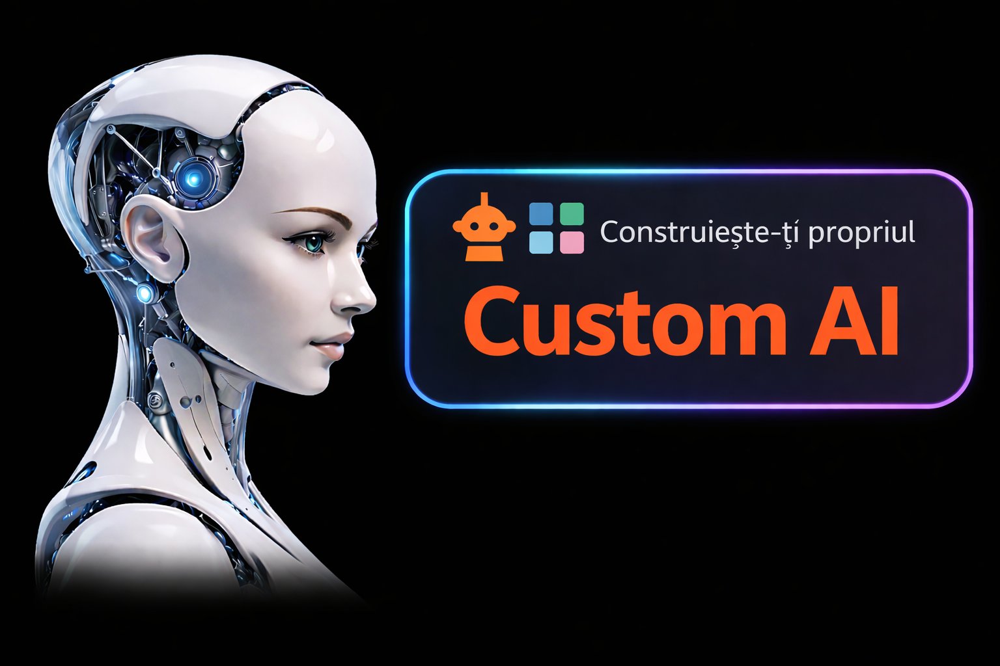
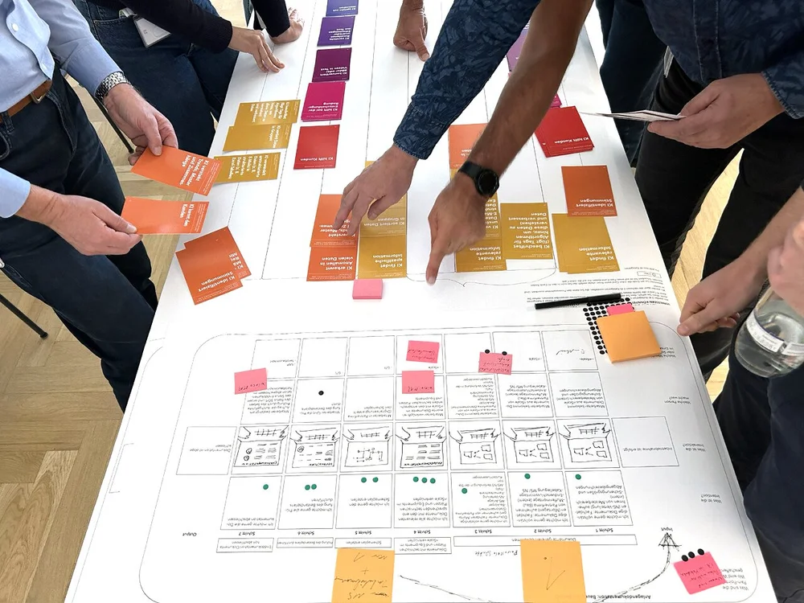

3 Sessions · 3 Concrete Outcomes
Each session ends with a deliverable you can use the very next day.

Prompt Engineering (CROTATFC)
Each participant builds a prompt library tailored to their role. Context, Role, Objective, Tasks, Audience, Tone, Format, Constraints. Eight core techniques plus ten advanced patterns used by AI engineers.

Custom AI Assistant for Every Role
Each participant builds and tests a custom AI assistant for their own role. Assistant specs, system instructions, knowledge sources such as documents, processes and internal procedures. Projects and workspaces in ChatGPT, Claude and Gemini.

AI Design Sprint
A practical framework for identifying, assessing and prioritizing AI opportunities in real processes across three stages: discovery, specification and pilot. The analysis starts from frictions such as searching, checking, copying, writing, routing and waiting, and prioritization uses the formula: Score = (Volume × Minutes × Impact × Feasibility) ÷ Risk.